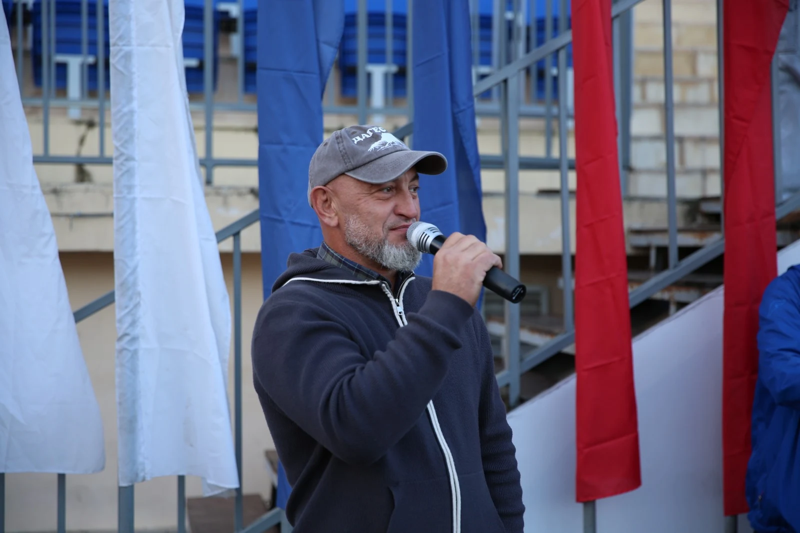
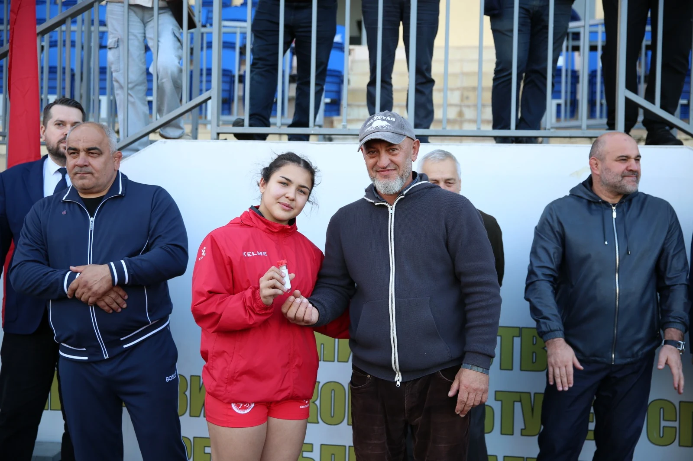

Начни с простого
Набивай лянгу внутренней стороной стопы. Сначала почувствуй снаряд, затем попробуй удержать серию.
SI-CONCEPT · ДУХОВНЫЙ ИНТЕЛЛЕКТ
Двоеборье: лянга и дартс
Варис Шамсуев объединяет людей вокруг традиционной игры и нового двоеборья. Ловкость лянги и точность дартса — в общем движении.

ЛЮДИ, КОТОРЫЕ ДВИГАЮТ ИГРУ01 / ЗНАКОМЬТЕСЬ, ЛЯНГА
Простая игра. Настоящий азарт.Удержать лянгу в воздухе.
Поймать ритм. Сделать ещё раз.
Лянга — небольшой игровой снаряд из меха с утяжелителем. Его подбрасывают ногой, выполняя разные движения и стараясь не уронить на землю. Можно играть одному, соревноваться с друзьями или собраться в команды.
Для Вариса Шамсуева эта знакомая с детства игра стала делом, которое объединяет людей и даёт традиции новую жизнь.
Набивай лянгу внутренней стороной стопы. Сначала почувствуй снаряд, затем попробуй удержать серию.
Попробуй набивку внешней стороной стопы. Этот приём в буклете называется «сырт».
Переходи к набивке под скрещёнными ногами. В основе игры — точность и контроль каждого касания.
02 / ЧЕЛОВЕК ЗА ДВИЖЕНИЕМ
Варис Шамсуев
Делиться игрой. Знакомить. Вдохновлять.ЛЯНГА СОЕДИНЯЕТ ЛЮДЕЙ
Варис Шамсуев активно развивает лянга-спорт с 2019 года: знакомит с игрой спортсменов, привозит её на большие события и дарит лянгу тем, кто готов попробовать.
Красноярск, Якутск, Москва — история складывается из поездок, встреч и простого приглашения выйти в игру.
Путь, о котором рассказывает Варис
Дата рождения «Лянга-спорта», указанная в буклете проекта.
По рассказу Вариса, лянга побывала на Универсиаде и Кубке мира по борьбе.
Поездка в Государственную Думу и знакомство новых людей с игрой.
Чемпионат к восьмилетию проекта и международные активности в планах на 2027 год.
03 / СЛЕДУЮЩАЯ ГЛАВА
КОНЦЕПЦИЯ В РАЗВИТИИДвоеборье «Лянга и дартс» — направление Si-Concept. Идея Вариса Шамсуева соединяет подвижность и точность в одной игре.
Сейчас Варис выстраивает отношения с Федерацией дартс-спорта. В числе его планов — активности с лянгой в Австралии во время Кубка мира по регби 2027 года.
Обсудить сотрудничество04 / ЖИВАЯ ИСТОРИЯ
Встречи, люди и моменты игрыКадры из личного архива Вариса Шамсуева
ПЕРЕД ПЕРВЫМ ДВИЖЕНИЕМ
Лянга, удобная обувь и достаточно свободного места для движения. Начни с простых набивок внутренней стороной стопы. Для знакомства с игрой можно связаться с Варисом.
Оба варианта подходят. В одиночку можно осваивать движения и улучшать свою серию, а с друзьями — соревноваться в количестве касаний и сложности приёмов. Формат и правила соревнования согласуют заранее.
Напишите в WhatsApp или позвоните по контактам ниже. Расскажите о городе, предполагаемой дате и участниках — так будет проще обсудить знакомство с лянгой на вашей площадке.
Варис планирует чемпионат к восьмилетию лянга-спорта. Дату, место и условия участия уточняйте у него напрямую. Международные активности 2027 года и двоеборье с дартсом пока находятся в планах.
05 / ПРИСОЕДИНЯЙТЕСЬ
ДАГЕСТАН · ОТКРЫТЫ НОВЫМ ВСТРЕЧАМХотите познакомиться с лянгой, пригласить Вариса
или обсудить совместный проект? Давайте общаться.